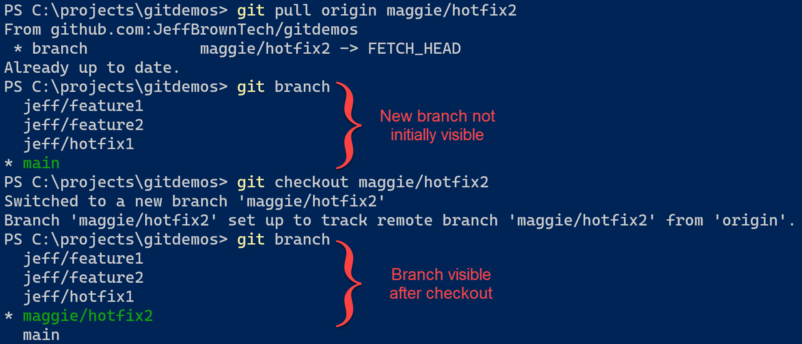

Comment se connecter sur GITLAB


Connexion sur son compte GITLAB
2.Cliquez sur le boutton SIGN UP en haut à droite afin d'aller sur son compte GITLAB, une fois sur la page de connexion, entrez vos identifiants
{kind=link}
Creéation d'un compte GITLAB
3. Si vous n'avez pas encore de compte sur GITLAB, vous pouvez en créez un en cliquant sur le bouton register now en bas sur la page de connexion.
Il vous sera demandez d'entrée vos informations puis cliquez sur le boutton Register une fois finis
{kind=link}
Creéation d'un compte GITLAB
4. Une fois toutes ses étapes finies, vous serez redirigez vers votre backoffice ou vous aurez la possiblité de mettre vos projets
Questions/Réponses
Comment importer un projet dans GitLab ?
Synchroniser un dépôt git local sur Gitlab
- Ouvrez votre compte Gitlab. Sur gitlab.com ou sur votre propre serveur Gitlab.
- Cliquez sur “Nouveau projet”.
- Choisissez l'onglet “Importer un projet”. ...
- Vous devrez peut-être vous connecter à votre compte Github.
- Choisissez le dépôt que vous souhaitez importer.
- Importez.
Quelles sont les fonctionnalités de GitLab ?
Elle permet de créer, tester et déployer des logiciels de manière collaborative. L'application tout-en-un propose d'accéder à l'ensemble des étapes du cycle de vie DevOps : chaque équipe peut planifier des projets et gérer le code source, l'approche CI/CD ainsi que la sécurité.
Comment créer une branche GitLab ?
Pour créer une branche, utilisez la commande git branch suivie du nom de la branche. Après avoir créé la branche, utilisez à nouveau git branch pour visualiser les branches disponibles. Notez que la création d'une branche par ce moyen ne fait pas automatiquement basculer vers la nouvelle branche.

{kind=link}
Comment utiliser GitLab ?
GitLab fonctionne dans les grandes lignes de la façon suivante : pour commencer, tous les participants à un projet téléchargent sur leur ordinateur une copie du référentiel central. Par la suite, les modifications apportées au code sont toujours d'abord effectuées au moyen de ce qu'on appelle des commits.